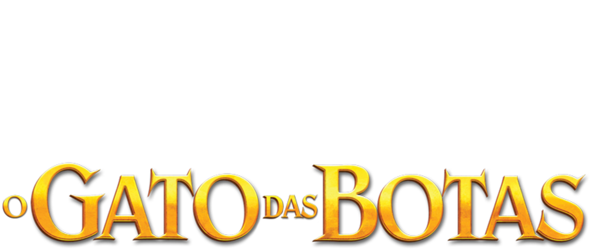
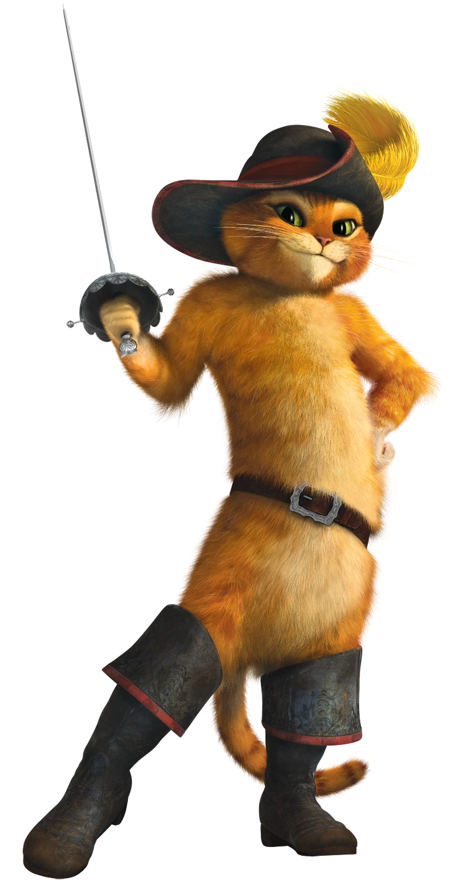

O Gato de Botas descobre que sua paixão pela aventura cobrou seu preço: por conta de seu gosto pelo perigo e pelo desrespeito à segurança pessoal, ele queimou oito de suas nove vidas. Com apenas uma vida restante, o Gato precisa pedir ajuda para uma antiga parceira - que atualmente é sua rival e inimiga mortal, Kitty Pata Mansa - para continuar vivo. Então, o destemido bichano parte em uma jornada épica pela Floresta Negra para encontrar a mítica Estrela dos Desejos, capaz de proporcionar o legendário Último Desejo e restaurar suas nove vidas.
X